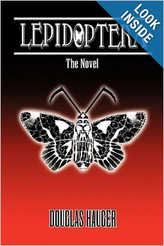

Lepidoptera the Novel on Amazon now!
Lepidoptera is my first book that was completed in the winter of 2003. Its a historical fiction story that takes place over a span of 2000 years or so. I spent eight years writing it and I still consider it one of my greatest accomplishments. It's 324 pages and its main character is a Roman centurion who fought under Julius Ceaser in the Gaul Wars. It can be found on Amazon currently and is published by Eloquent books. I hope to have an e-book version up and running soon, or having a free download that anyone can print up if they want from this site. I have a sequel in progress, but very little time to work on it at present.
There is More than Flesh and Bone
There is chaos and order...war and peace...love and hate...life and death...and a Realm that exists between it all. A Realm called the Void.
A place of honor, loyalty, duty, and redemption. A world where an immortal race called the Procuri is sworn to uphold the laws where the
'Realm of Four' exist. And two of its most esteemed Guardians are Maya and Hieronymous. Through conflicts with the Polymorph
Maldoror, a member of the Children of Non, and the siren like Abdiel, one of the ethereal beings known as the Maginites, they have been
to heaven...and hell...and survived both. But in the end they are torn apart by that which could ultimately save them. Their
journey takes them beyond the human condition of the battlefeilds of Rome, the fall of Christ, a Chinese famine and the ship warfare ofthe
Napoleonic wars. It shows them the gift of life and the significance of death. It reminds about what is forgotten and what is remembered.
It is about the inevitability of change...and it all begins with a choice... That is the LEPIDOPTERA.